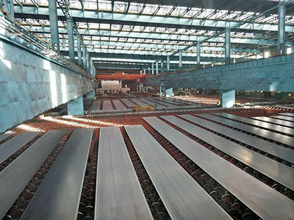

Cargo ships must be constructed using materials that are extremely strong and durable. These ships operate in harsh ocean environments where they face powerful waves, salt water corrosion, and heavy cargo loads. Engineers carefully select materials that can withstand these conditions while also providing structural stability and safety.
Steel is the primary material used in modern shipbuilding. High strength steel plates are welded together to form the hull and structural framework of the ship. Special coatings are applied to protect the metal from rust and corrosion caused by constant exposure to seawater. Other materials such as aluminum and reinforced composites may also be used in specific areas to reduce weight and improve performance.